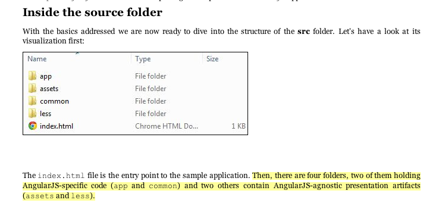

Table of Contents
Roadmap

- Create the scaffolding for an AngularJS / Chrome App
- Personal task management logger: https://chrome.google.com/webstore/category/app/87-task-management
- Why do the tools exist
- What do they do
- When would you want to use
Getting Started
Yeoman
Find the following applications: generator-chromeapp and generator-angular
yo
Chrome App Example
- Local install only where we want help with CRX packaging
- Cover the standard case of a new application and also the update story
- Ensure integration into existing stacks is notes
http://developer.chrome.com/apps/about_apps.html
npm install -g yo generator-generator mkdir ~/dev/generator-blog && cd $_
Generation
├── app │ ├── index.js │ └── templates │ ├── _bower.json │ ├── _package.json │ ├── editorconfig │ ├── jshintrc │ └── travis.yml ├── test │ ├── test-creation.js │ └── test-load.js ├── .editorconfig ├── .gitattributes ├── .gitignore ├── .jshintrc ├── .travis.yml ├── LICENSE ├── package.json └── README.md
Application Personal
cd angular.js
git checkout v1.2.1
AngularJS Example
Yeoman
We're going to go through the setup of a Chrome Application for pulling down a gallery locally from Flickr.
We could either do this through locally sourcing the source
bower install angular
or using two generators.
Why
What
Simplify workflow for JavaScript applications. Best example are the notes in:
http://a.blip.tv/api.swf#g_MngvbfHwI
Paul Irish - JavaScript Tooling http://2012.jsconf.us/
Setting up new applications is byzantine for new users.
Yeoman creates your projects
- rails
- lein new {template}
mkdir my-chrome-app
cd my-chrome-app
yo chromeapp:app my-chrome-app

Gruntfile.js app bower.json dist node_modules package.json test
Grunt builds your projects
- make
- rake
- ant
grunt
Bower manages your dependency
JavaScript Tools
- consistency of style
- compile on watch
- static builds
- shell script
- css preprocessors
These all feed into the lifestyle of projects in JavaScript.
Updating
Updating versions of components is trivial. Regression testing
npm update -g generator-chromeapp
Searching
Yeoman

- npm searching
Alternatively we could have done:
npm search yeoman-generator chrome npm search yeoman-generator angular
Grunt
- Grunt.js search on github
- external tools (sass and coffeescript)
- code coverage
- unit testing
- compatibility testing
Use GitHub for sample plugins:
https://github.com/search?o=desc&q=Gruntfile.js&ref=cmdform&s=stars&type=Repositories
- https://github.com/angular/angular.js/blob/master/Gruntfile.js
- https://github.com/eBay/skin/blob/master/Gruntfile.js
- https://github.com/fleeting/gruntfile.js/blob/master/gruntfile.js
- Unit testing
- Wrap
- Linting
Installation
Starting with a clean installation.
History
This is broadly the history of all JavaScript Tooling:
- 2011: Static analysis
- JSLint
- February 2011: JSHint http://badassjs.com/post/3364925033/jshint-an-community-driven-fork-of-jslint
- March 2012 Grunt releases with init and basic task support (Ben Alman) http://benalman.com/news/2012/03/introducing-grunt/
- April 2012 Grunt and Yeoman as a tools tracks at JSConf (both Irish and Alman ) http://2012.jsconf.us/
- June 2012 Grunt on a session for http://events.jquery.org/2012/sf/
- June 2012 Yeoman releases at Google I/O groups and http://www.youtube.com/watch?v=Mk-tFn2Ix6g
- November 2012 first public Bower release at 0.5 from Twitter
- February 2013: Grunt 0.4 adds local checkout
Grunt plugins
Updating
The story for adding in new features
Package Privacy
locally for project
bower register <my-package-name> <git-endpoint>
Friction
Version control and submodule access
Public access for components when using client visible changes of the minified files.
Conclusion
- Useful in single page applications
- Still very young
Questions?
- Twitter: @jwalsh_
- Email: jwalsh@bluekai.com
/
← → #